|
Opname Rodasong met de spelers 4 maart 2004 |
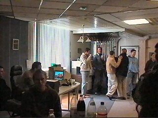
Om 13.00 uur verschijnen de spelers van het
eerste elftal in studio Eurode. Ook zijn er een
tiental Roda-supporters aanwezig.
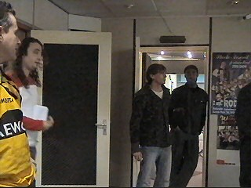
Zelfs nieuwe aanwinst Iwan Redan is erbij, hier
in de deuropening naast Kevin van Dessel.
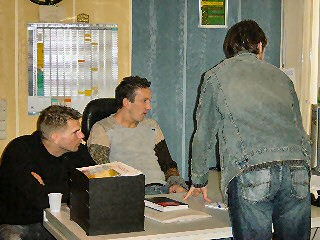
Van Hoogdalem nestelde zich meteen in de
directeursstoel en ging xxx-sites kijken.
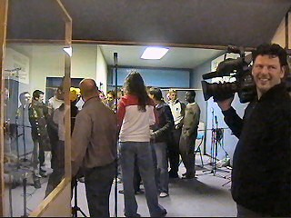
Rechts in de verte Sven Vandebroeck en
Arouna Kone.
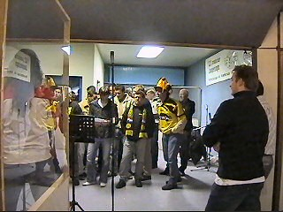
Ook Norbert Keulen en Hans Wiltenburg waren
erbij.
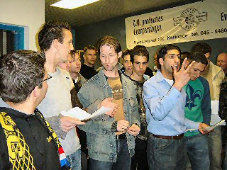
Fatih telt af....
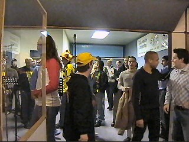
De opnamesessie verliep erg snel. Na 20 minuten
zat de sessie er al op.
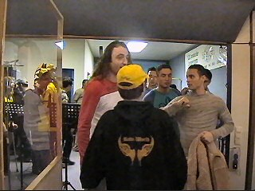
Sergio was erg tevreden over zichzelf.
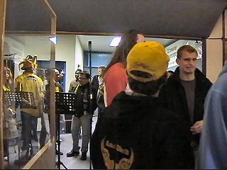
Kujovic schijnt zingen als hobby te bedrijven.
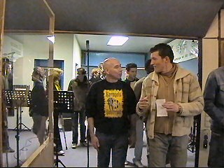
Aydogan neemt de tekst mee om thuis verder te
oefenen.
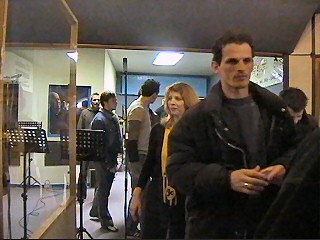
Predrag Filipovic.
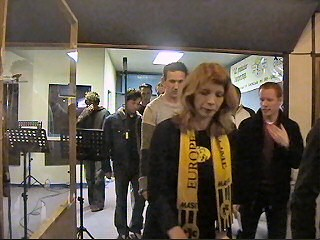
Vincent Lachambre met daarnaast Marco van
Hoogdalem.
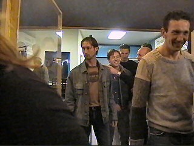
Senden, Van Dijk, Brouwers. De enige speler die
er niet bij was: Edrissa Sonko :-(
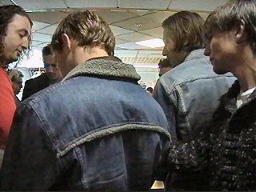
Gregoor, Ivan en Kevin nemen een demo-ceedee
van Dogman in ontvangst.
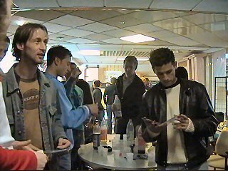
Jerome Colinet bestudeert het hoesje aandachtig.
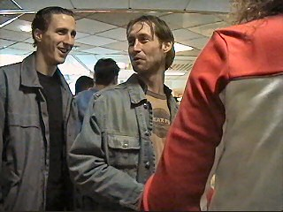
De spelers verlaten nu de studio.
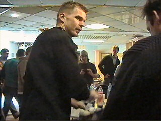
Alleen Marc moet nog even blijven voor een
interview voor L1.
Over ca. 1 week is de Rodasong afgemixt. Op
20 maart zal het liedje voor de eerste keer door
het PLS schallen (Roda-Willem II). Eind maart
zal de single verkrijgbaar zijn.
© Koempels
Pleasure Dome